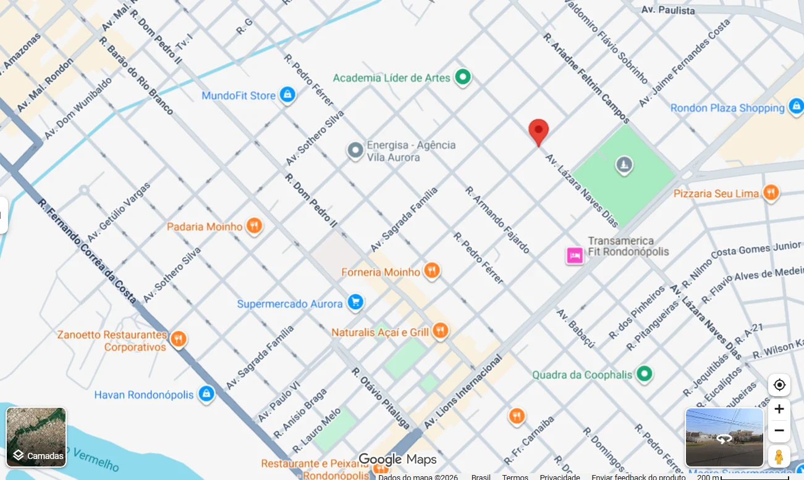

Vitaminas e Cabelo
Investigação de possíveis carências e fatores relacionados à queda de cabelo.
EMAGRECIMENTO FEMININO COM ACOMPANHAMENTO MÉDICO
Um acompanhamento individualizado para mulheres que desejam emagrecer com atenção ao cabelo, à massa muscular, às curvas e ao que acontecerá depois da medicação.
FALAR COM A EQUIPE NO WHATSAPPAtendimento presencial em Rondonópolis.
Investigação de possíveis carências e fatores relacionados à queda de cabelo.
Atenção à composição corporal e à preservação da massa muscular.
Uma alimentação planejada para o seu corpo, suas preferências e sua rotina.
Estratégias para sustentar o resultado e reduzir o risco do efeito sanfona.
Talvez essa também seja a sua dúvida
Quem considera usar uma caneta emagrecedora costuma ter dúvidas que vão muito além do número na balança.
Mais do que indicar, é preciso acompanhar
A medicação, quando indicada, pode fazer parte da estratégia. Mas a resposta do organismo não deve ser avaliada apenas pelo peso.
Alimentação, sintomas, exames e composição corporal ajudam a mostrar se o processo está fazendo sentido para você — e onde pode ser necessário ajustar a conduta.
FALAR COM A EQUIPE NO WHATSAPPAvaliar alimentação, exames e outros fatores quando houver queda ou enfraquecimento dos fios.
Acompanhar a perda de peso observando também a massa muscular, a força e as mudanças nas formas do corpo.
Construir uma estratégia alimentar que funcione fora do consultório e possa ser mantida na rotina.
Observar sintomas e entender como o organismo está respondendo em cada etapa.
Orientar o uso quando houver indicação médica, sem copiar doses ou condutas feitas para outras pessoas.
Pensar na manutenção antes que a fase inicial termine e a medicação deixe de ser o centro do processo.
Avaliar alimentação, exames e outros fatores quando houver queda ou enfraquecimento dos fios.
Acompanhar a perda de peso observando também a massa muscular, a força e as mudanças nas formas do corpo.
Construir uma estratégia alimentar que funcione fora do consultório e possa ser mantida na rotina.
Pensar na manutenção antes que a fase inicial termine e a medicação deixe de ser o centro do processo.
Perder peso é só uma parte
Ele aparece quando você percebe suas roupas vestindo melhor, sente segurança nas próprias escolhas e entende como continuar cuidando do corpo conquistado.
Acompanhar medidas e composição corporal, sem resumir toda a evolução ao peso.
Considerar alimentação, massa muscular e disposição enquanto o corpo muda.
Preparar uma rotina que não dependa apenas da fase inicial do tratamento.
Um processo com direção
Cada mulher chega com um histórico, uma rotina e um objetivo diferentes. É por isso que a conduta começa pela avaliação — e não pela escolha de uma caneta.
Conversar sobre seu objetivo, suas dificuldades, sua rotina e suas experiências anteriores com o emagrecimento.
Observar histórico de saúde, exames, alimentação, composição corporal e possíveis queixas.
Construir uma conduta individualizada e avaliar se o uso de medicação faz sentido para o seu caso.
Analisar adaptação, evolução e possíveis necessidades de ajuste ao longo do processo.
Planejar a próxima fase para que o cuidado não termine junto com a etapa inicial.
Quem vai cuidar de você
Antes de definir qualquer estratégia, a Dra. Jéssica busca compreender seu histórico, sua rotina, seus exames, sua composição corporal e o que você espera do tratamento.
Quando existe indicação de medicação, essa decisão faz parte de um acompanhamento mais amplo. O foco não está apenas em começar, mas em observar a resposta do organismo, orientar os próximos passos e preparar a continuidade do cuidado.
Dra. Jéssica Ferreira
Médica, pós-graduada em Nutrologia, em Obesidade e Síndrome Metabólica.

ATENDIMENTO PRESENCIAL EM RONDONÓPOLIS
Um espaço para conversar sobre seus objetivos, esclarecer suas dúvidas e receber orientação individualizada durante cada etapa.
ANTES DE TOMAR UMA DECISÃO
A queda de cabelo pode ter diferentes causas. Quando existe essa queixa, a avaliação pode considerar alimentação, exames, velocidade da perda de peso e histórico clínico antes da definição da conduta.
A perda de peso também pode envolver redução de massa muscular. Por isso, o acompanhamento observa a composição corporal, a alimentação e a rotina durante o processo.
A firmeza depende de fatores como características da pele, massa muscular, quantidade e velocidade da perda de peso. A avaliação ajuda a identificar os cuidados adequados para cada caso, sem prometer um resultado específico.
Cada organismo pode responder de uma maneira. Durante o acompanhamento, os sintomas e a evolução são observados para que a médica avalie se alguma orientação ou mudança é necessária.
Sim, quando houver indicação médica. A dose é definida individualmente e não deve ser copiada de outras pessoas nem alterada sem avaliação.
A manutenção é considerada desde o início, com a construção de uma rotina mais sustentável. Nenhum tratamento pode garantir que o peso nunca será recuperado, mas o planejamento reduz a dependência exclusiva da medicação.
Não. A consulta pode ser o primeiro passo para entender se essa possibilidade é adequada ao seu caso.
ANTES DE ESCOLHER UMA CANETA
Converse com a equipe, consulte os horários disponíveis e agende sua consulta presencial com a Dra. Jéssica.
Atendimento presencial em Rondonópolis.FALAR COM A EQUIPE NO WHATSAPP